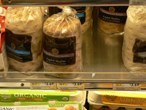

Wolferman's at Balducci's
Attention, Wolferman’s English muffin fans in New York: Balducci’s sells them in various flavors for $3.69.

I figured this would be expensive compared to ordering them online, but in a surprising twist, it turns out they are $5 per package on the website if you order four packs, and only slightly less than that if you order six packs. And then there’s the pricey shipping to worry about.
But the sale is still going on (perhaps it never ends?), which is where the most dramatic savings are to be found.
Personally, I’ll be happy if I never see another Wolferman’s English muffin, after going through six packs in the last month. They are very good, but they can’t compete with my standard: the everything bagel from Bagel Bob’s, which I can eat five times a week without getting bored.
Comments
oh dear. I LOVE and ADORE Wolfermans but now I live in the Hudson River Valley. I guess its still cheaper for me to order – and they still beat all of the rest in my mind.
Weee! Now I can try them, too. Even though I hate Balducci’s. I’ll go in there, just for Wolferman’s! :)
Wolferman’s has the WORST customer service I’ve ever experienced. Stay with Bagel Bob’s.
Trying to actually place an order through Wolferman’s Web site is impossible if you want the free shipping that they lie about on the front page of the catalog.
When I called the customer service number, I got “Chris,” who was chewing on a hard piece of candy in my ear. When I explained to him that I entered my “M” number from the back of the catalog into their Web site, and I ordered more than the $55 minimum to receive the free shipping, AND it was before the Dec. 16, 2007 deadline, yet I still wasn’t given free shipping, he only said, “I have no other information from my supervisor to give you,” and then chomped on his candy.
When I indicated that I would be calling their corporate office to complain about him, all he did was laugh and hang up. There are millions of other catalogs arriving on my doorstep every day, so laugh about that Wolferman’s!
Did you know Wolfermans muffin’s could be a year old before you get them?I got tracking them after they were shipped from california instead of KC.
They were made in AR in july shipped to OR then to CA I recieved them in Dec.! Nothing I would buy from them again!Not a permium product!In my town Day old bakery is sold at a discount Week old is thrown out! DAVE
I just received a package of Wolferman’s crumpets as a birthday gift – so sorry to the person who sent the generous gift, but I don’t eat wheat or gluten products! I called customer service and after a few questions, they gladly refunded the purchase price to the person who’d ordered the gift for me. Short of developing a gluten-free line of baked goods, that was pretty good customer service!
Don’t think this is common knowledge, but Wolferman’s is no longer based in Kansas City. They were bought by Harry & David in January, 2008 and moved to OR.
I don’t think Wolferman’s are all that great, anyway; I like Thomas’s better with their nooks and crannies. Leland, have you ever made English muffins at home?
Add a comment